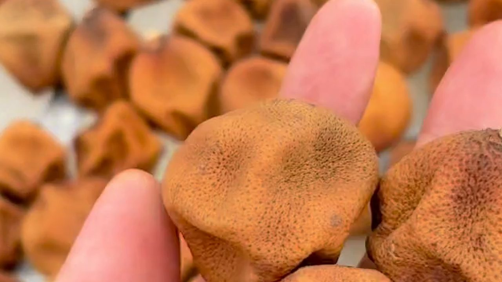
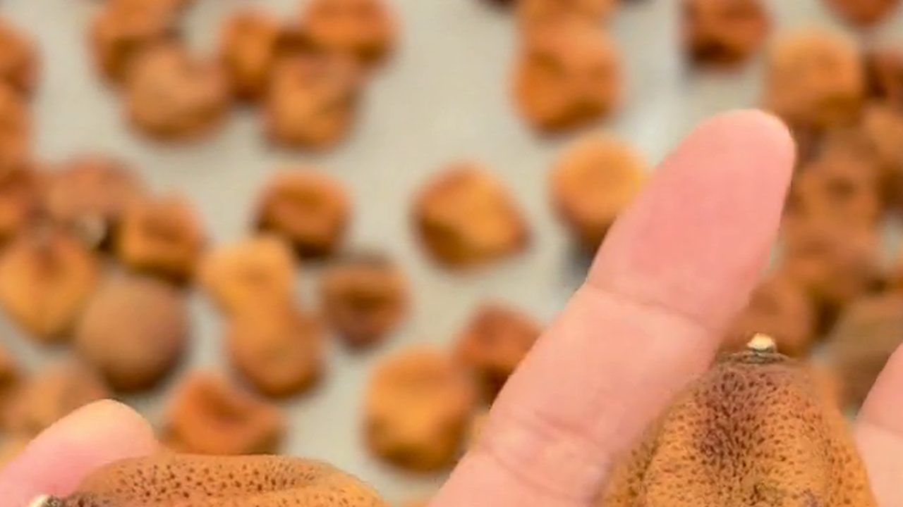
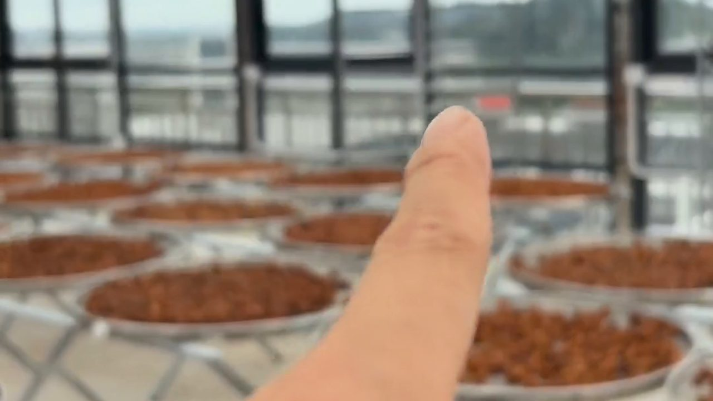
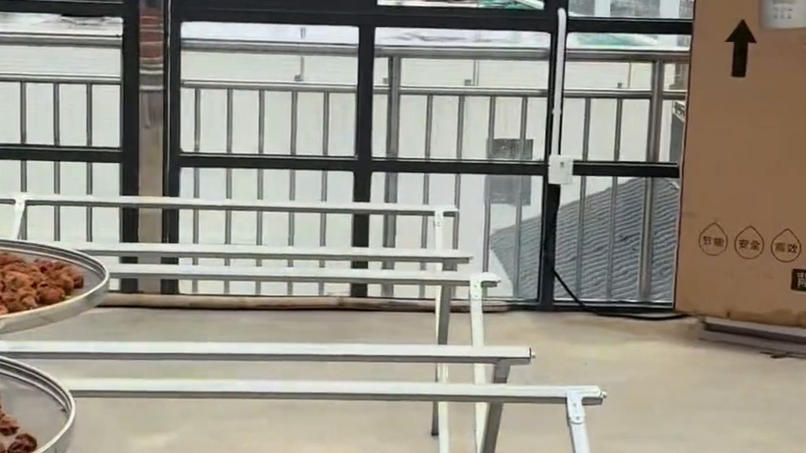
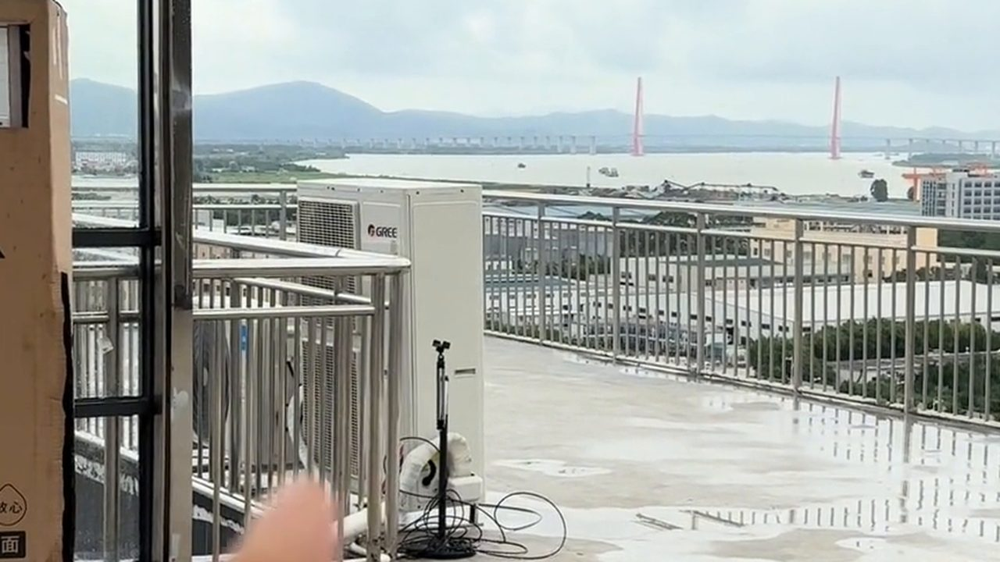

棚架曬房裡，金屬架上一排排圓篩，攤着正在陳化的橙褐色陳皮；旁邊立着幾個準備入箱的厚紙箱。對新會陳皮來說，曬好只是上半場——真正的下半場，從入箱那一刻才開始。
而這下半場最容易被忽略的一件事是：容器要隨年份換。
一、5 年是一道分水嶺：透氣與密封的平衡

依江門市新會陳皮研究院的建議，儲存容器要讓密封性與透氣性達到理想平衡，所以按年份選：
5 年及以下——選透氣性好的容器：膠框、麻袋、布袋、厚紙箱。這個階段要的是「繼續自然陳化」，悶太死反而容易出水；同時要注意環境的溫度與濕度，一旦發現陳皮受潮變軟，就要及時翻曬，防止霉變和蟲蛀。
5 年以上——改用密封性強的容器：玻璃瓶、金屬桶。此時風味已基本成型，重點變成防潮、防霉、防蟲。
也就是說，一隻紙箱和一隻玻璃瓶，對應的是陳皮完全不同的兩個人生階段。
二、翻曬節奏表：從 1 年到 10 年以上

同一份資料把翻曬節奏分成了四段，值得抄下來：
1-3 年——關鍵期，含水量較高。每年翻曬至少 2-3 次，每次至少 3 小時，安排在早上 9 點至下午 4 點之間。
3-5 年——風味逐漸形成。每年1-2 次，並且定期檢查，皮身變軟立即翻曬；不要曝曬一整天。
6-10 年——穩定期，性狀逐漸穩定，每年適當晾曬即可，容器用鐵皮罐或玻璃瓶。
10 年以上——基本穩定，只要存放在密封容器（鐵皮罐、玻璃罐）就行。
「咁我買咗十年皮返屋企，係咪唔使理佢？」
「基本上係，但要睇一眼有冇蟲蛀。有嘅話要倒出嚟曬太陽——十年皮都係一樣，一有蟲就要處理。」
三、潮濕天與蟲蛀：兩個最常見的翻車點

陳皮出問題，幾乎都出在這兩件事上。
受潮變軟。檢查的動作很簡單：用手捏一下。正常的皮有韌性、捏下去會回彈；一旦變軟，就是吸了濕，要立即翻曬。
蟲蛀。發現蟲蛀，做法是倒出來在陽光下暴曬，而不是加藥、加防蟲劑——這一點研究院寫得很明確。
存放環境則守住「三離」：離地、離牆、離頂，放在自然通風乾燥的地方。回南天盡量不開箱，等天氣乾爽再取出透氣。
四、怎麼判斷你買到的皮「存得好不好」

不用專業儀器，用四個動作就能判斷：
看——皮身完整、三瓣相連，油室（細小凹點）清晰；顏色自然，不是死黑。
聞——陳香、清香，帶一點柑香；如果有酸味、霉味，就是存壞了。
捏——有韌性、會回彈。硬得像石頭或軟得像布，都不理想。
折——輕輕一折，能斷但不碎成粉，斷面有油光。
這四步不需要經驗也能上手，重點是把它變成習慣：每次開箱都做一遍。
五、為什麼好皮最後都裝進紙箱

看到影片裡那些厚紙箱，很多人會覺得「怎麼這麼樸素」。但對 5 年以下的皮來說，厚紙箱恰恰是對的選擇——它透氣但不透水，能讓皮繼續呼吸、慢慢轉化，又不會像完全密封那樣把濕氣悶住。
等皮過了自己的「青春期」，再換成玻璃瓶或金屬桶封起來。這套「先透氣、後密封」的邏輯，就是新會人所說的陳久者良。
常見問題
新會陳皮用什麼容器存最好？按年份分：5 年及以下用膠框、麻袋、布袋、厚紙箱等透氣容器；5 年以上換成玻璃瓶、金屬桶等密封容器，做到密封與透氣的平衡。
多久要翻曬一次？1-3 年每年至少 2-3 次、每次至少 3 小時；3-5 年每年 1-2 次；6-10 年每年適當晾曬；10 年以上放在密封容器即可，發現蟲蛀要暴曬處理。
怎麼知道陳皮受潮了？用手捏。正常的皮有韌性、會回彈；變軟就是受潮，要立即翻曬，防止霉變與蟲蛀。
發現蟲蛀怎麼辦？倒出來在陽光下暴曬，不要加防蟲劑或藥物。之後檢查容器是否密封，5 年以上的皮建議換成玻璃瓶或金屬桶。
陳皮可以放冰箱嗎？不建議。冰箱取出時溫差會導致表面凝水，反而容易受潮。常溫、通風、乾燥、離地離牆離頂，才是新會陳皮的正常存放方式。
存放位置要注意什麼？守「三離」：離地、離牆、離頂，放在自然通風乾燥處。回南天盡量不開箱，天氣乾爽再取出透氣。
結語
一片皮從樹上到你的罐子裡，要過三關：曬得對、存得對、等得住。前面兩關可以靠方法，最後一關只能靠時間——而時間，恰好是陳皮最貴的那部分成本。
註：翻曬次數、時間與容器建議引自江門市新會陳皮研究院（江門市五邑中醫院）〈「一兩陳皮一兩金」保存恰當勝黃金〉；工序敘述引自中國非物質文化遺產網「中藥炮製技藝（新會陳皮炮製技藝）」。實際操作請按當地氣候調整。
想知道怎麼曬才不會把香氣曬跑，看這篇《曬得多不等於曬得好》；想知道夜裡為什麼還有人在翻皮，翻翻這篇《夜裡還在翻皮：新會陳皮的「三年曬皮」》。想當面看看不同年份的皮、聞一聞差別，來新會陳皮村南門牌坊G04找滢滢姐，店裡常年備着熱茶。
下期預告：同一批皮分成紙箱、鐵罐、玻璃瓶三種存法，一年後開箱，只憑鼻子分出高下。